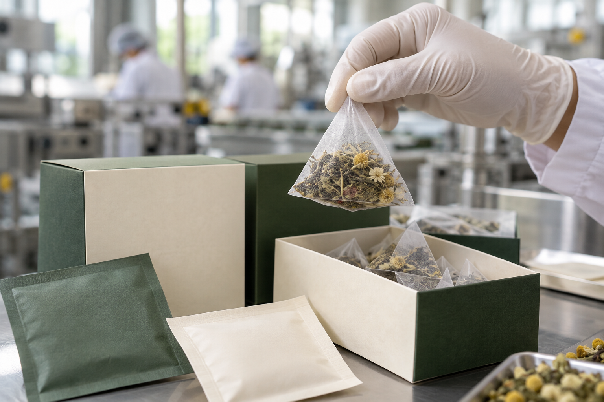
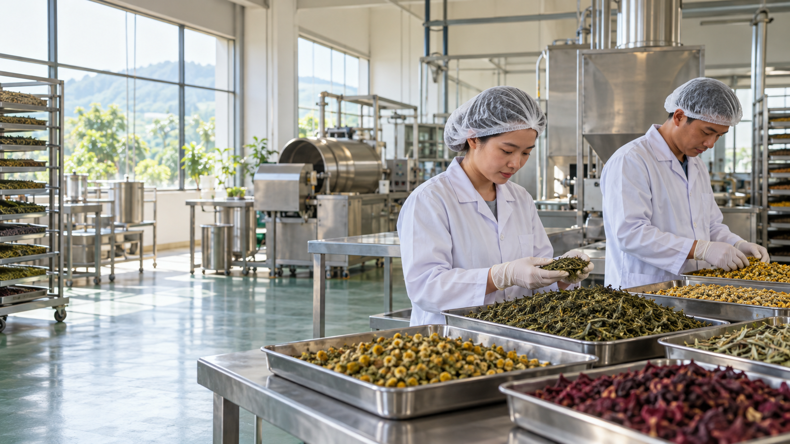
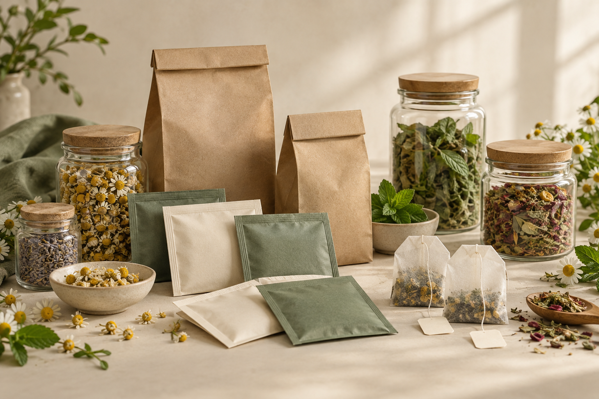
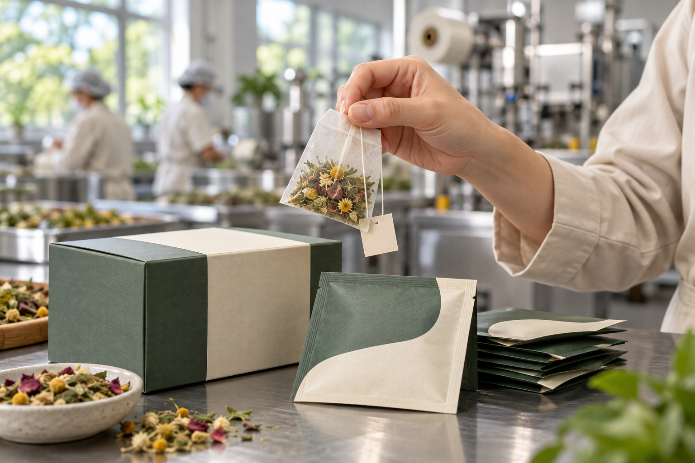
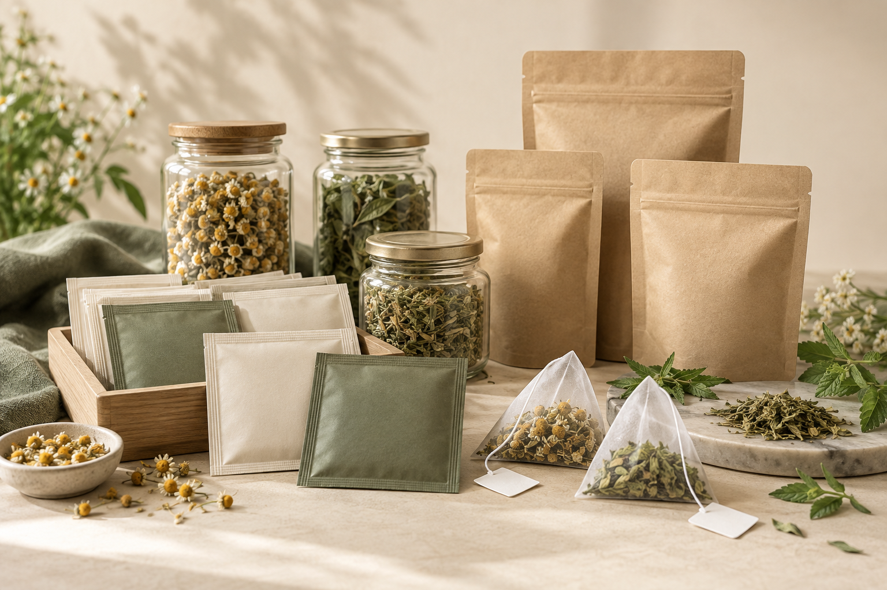
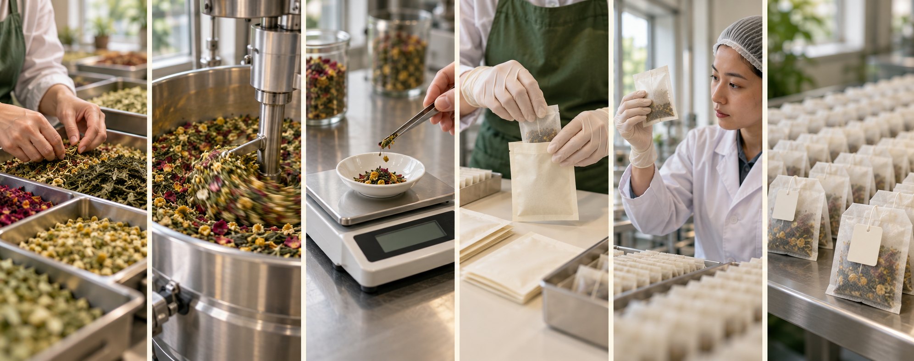

01
Gia công trà túi lọc theo yêu cầu
Đa dạng thành phần, công thức phối trộn và quy cách đóng gói, phù hợp sản phẩm tiện lợi.
- Túi lọc có dây, tem chỉ
- Túi lọc không dây
- Bao phim, hộp giấy, túi zip
CÔNG TY TNHH HOÀNG THẢO MỘC
Từ ý tưởng đến sản phẩm mang thương hiệu riêng. Đồng hành cùng cá nhân và doanh nghiệp từ nguyên liệu, công thức đến gia công và hoàn thiện bao bì.

CHÚNG TÔI LÀ AI?
Công ty TNHH Hoàng Thảo Mộc là đơn vị hoạt động trong lĩnh vực trà thảo mộc, với hơn 10 năm kinh nghiệm trong nghiên cứu, phát triển và sản xuất các dòng sản phẩm trà.
Chúng tôi cung cấp giải pháp gia công theo yêu cầu, từ lựa chọn nguyên liệu, phối trộn công thức, phát triển mẫu đến đóng gói và hoàn thiện sản phẩm.
DỊCH VỤ GIA CÔNG
Tập trung vào giải pháp B2B: rõ ràng, linh hoạt, phù hợp định hướng thương hiệu.

Đa dạng thành phần, công thức phối trộn và quy cách đóng gói, phù hợp sản phẩm tiện lợi.

Gia công nguyên liệu thô, cắt, nghiền hoặc phối trộn theo định hướng sản phẩm.

Bao phim từng túi lọc và hoàn thiện đóng gói, giúp sản phẩm chỉn chu, thuận tiện phân phối.

Cùng trao đổi về nguyên liệu, tỷ lệ phối trộn, đặc điểm sản phẩm và quy cách đóng gói.
QUY CÁCH ĐÓNG GÓI
Mỗi dòng sản phẩm có định hướng phân phối khác nhau. Chúng tôi cùng bạn lựa chọn phương án phù hợp.
Kiểu dáng tiện dụng, phù hợp nhiều dòng trà.
Bao gói riêng từng túi lọc.
Đóng gói thành phẩm theo bộ nhận diện.
Phù hợp trà thô và trà phối trộn.
Đa dạng kiểu dáng và dung tích.
Phù hợp các dòng sản phẩm quà biếu.
QUY TRÌNH GIA CÔNG
Thống nhất yêu cầu trước sản xuất, giúp khách hàng dễ theo dõi tiến độ.

Trao đổi nhu cầu, dòng trà và mục tiêu.
Định hướng thành phần, phối trộn.
Đánh giá và thống nhất mẫu.
Hoàn thiện nhãn và quy cách.
Gia công theo mẫu đã duyệt.
Hoàn thiện và bàn giao thành phẩm.
NĂNG LỰC XƯỞNG
Hình ảnh minh họa được xây dựng theo định hướng xưởng trà hiện đại. Khi có bộ ảnh thực tế của công ty, em sẽ thay đúng từng vị trí mà không đổi bố cục.
ĐỐI TÁC CỦA BẠN
Có ý tưởng thương hiệu trà nhưng chưa có xưởng sản xuất riêng.
Mở rộng danh mục hoặc phát triển dòng trà mới.
Phát triển sản phẩm theo định hướng kinh doanh.
Xây dựng sản phẩm cho hệ thống hoặc quà biếu.
PHÁT TRIỂN SẢN PHẨM
Trao đổi mục tiêu sản phẩm, lựa chọn nguyên liệu, phối trộn, thử mẫu và thống nhất quy cách bao bì — từng bước rõ ràng, phù hợp định hướng thương hiệu.
ĐỒNG HÀNH PHÁT TRIỂN
Tùy phạm vi hợp tác, Hoàng Thảo Mộc trao đổi về nguyên liệu, mẫu thử, bao bì, hồ sơ và phương án hoàn thiện đơn hàng.
FAQ
Trà túi lọc, trà thô, trà thảo mộc phối trộn và các dòng sản phẩm theo yêu cầu, tùy nguyên liệu và quy cách.
Có. Chị có thể chia sẻ ý tưởng và nhu cầu để được trao đổi về nguyên liệu, thành phần và phương án phối trộn.
Số lượng phụ thuộc dòng sản phẩm, quy cách và yêu cầu sản xuất. Vui lòng liên hệ để được trao đổi cụ thể.
Vui lòng liên hệ trước để trao đổi và sắp xếp lịch phù hợp với điều kiện tiếp đón của công ty.
Chị cung cấp loại trà, thành phần, trọng lượng, quy cách và số lượng dự kiến. Bộ phận tư vấn sẽ tiếp nhận và trao đổi.
BẠN ĐANG CÓ Ý TƯỞNG KINH DOANH TRÀ?
BẮT ĐẦU TỪ Ý TƯỞNG CỦA BẠN
Chia sẻ nhu cầu, Hoàng Thảo Mộc sẽ trao đổi phương án sản phẩm và quy cách gia công phù hợp.